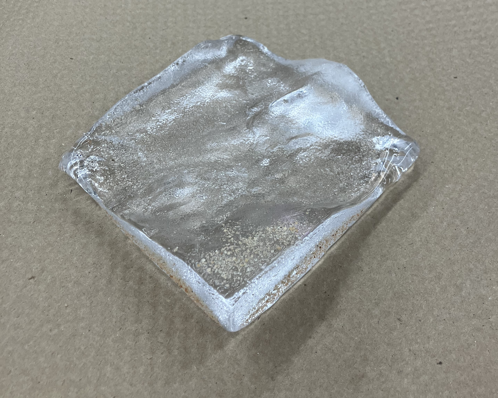
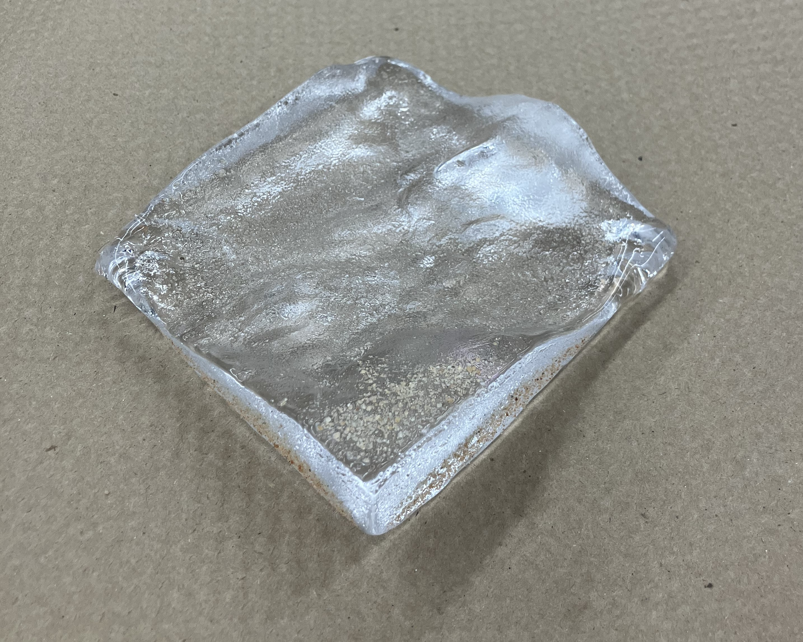

My portfolio is currently a work in progress! I’m in the process of adding images and descriptions of my projects, but I hope it’s still informative in the meantime.
Projects
Glass Map
A fairly useless object shaped like Earth’s surface at 38.06 °N, 119.90 °W
Pulled topographic data from Esri GIS, created mesh and processed in Blendr to adjust draft angles, 3d printed the map, used the plastic model to make a sand mold, lined the mold in soot, poured molten glass, annealed in kiln, sanded base flat.
 

Rocky
Inverted pendulum balancing robot
3 and 5 pole control systems were modelled in Simulink and implemented in C++.
Alkaline Hydrolysis Hydrogen Generator
Produces ~1.5L/min hydrogen per cell.
Hydrothermal Vent Mapping
Research with Dr. Victoria Preston
Creating 3-D models of deep sea hydrothermal vents from video recorded by the ALVIN submersible to calculate geochemical flux over time. Structure from motion with OpenCV, COLMAP, and Meshlab. Voxel comparison with Blendr. Ongoing.

Low Budget Onewheel
Principles of Integrated Engineering class project
I was responsible for fabrication, designing structural parts, and testing the motor.